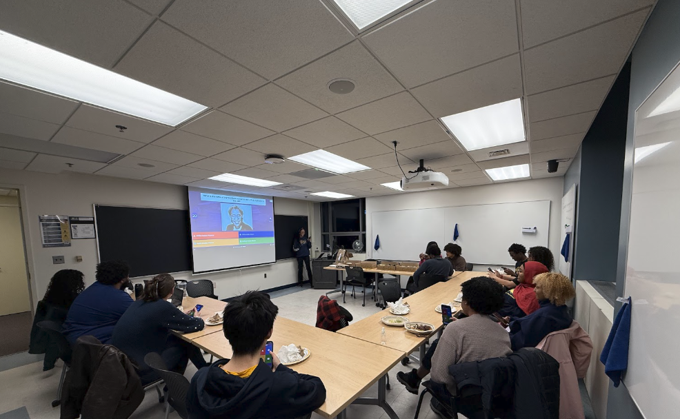

Science & community
Outreach
Science Communication Fellows
The University of Michigan Museum of Natural History’s Science Communication Fellows program helps researchers share their work with public audiences through hands-on activities.
I presented Written in the Stars at the Museum of Natural History on November 15, 2026, teaching visitors how to identify elements from stellar spectra.
About the fellowship ↗STEM para as Minas
Founder
STEM para as Minas is a Brazilian initiative that encourages girls and women to explore science, technology, engineering, and mathematics. It shares opportunities and builds connections to help them find their place in STEM.
More to come.
Explore STEM para as Minas ↗CoPhIE
Executive board member
The Community of Physicists for Inclusion and Equity at the University of Michigan brings together undergraduate and graduate students, postdoctoral researchers, and faculty to support underrepresented groups in physics. Its activities include advocacy, outreach, professional development, and social events.
Meet CoPhIE ↗NSBP · Willie Hobbs Moore Chapter
Vice president
I serve as vice president of the University of Michigan’s Willie Hobbs Moore Chapter of the National Society of Black Physicists. The chapter supports Black physicists and the surrounding community through professional development, wellness, community building, and outreach.
Meet the chapter ↗


